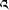

|
往生法
尤为悲悯愚昧之众生，尤为摄受罪孽深重者，
尤以善巧法调难化众，无等上师足下我敬礼。
乙三（修持正行支分捷径往生法）分三：一、往生分类；二、往生修法；三、往生仪轨。
丙一（往生分类）分五：一、利根者见解印持法身之往生；二、中根者生圆双运报身之往生；三、下根者无量大悲化身之往生；四、平凡者具三想之往生；五、以大悲铁钩超度亡灵之往生。
丁一、利根者见解印持法身之往生：
在这一世当中，自相续生起了无伪实相的无误见解并且不断修行、串习的人，在临终的时刻，通过本来清净的密道，依靠法界觉性的要诀而往生于法身界中。
丁二、中根者生圆双运报身之往生：
对于生圆次第无二瑜伽极为娴熟并且对于如幻的圣尊身相有纯熟妙力的人，临终的时刻在中阴的迷乱景象出现的同时，往生于双运智慧身中。
丁三、下根者无量大悲化身之往生：
获得密宗能成熟之灌顶、没有染上破誓言的过患、对生圆次第具有胜解并拥有中阴窍诀的人，通过阻塞不净的胎门、依靠大悲心的牵引和转为化身道用而往生清净刹土，正如颂云：“封闭胎门当忆有寂界，需要精进净观之一刻。”
丁四、平凡者具三想之往生：
一般的普通人依靠将中脉作为道路想、心识明点作为旅客想、极乐清净刹土作为去处想而往生。
丁五、以大悲铁钩超度亡灵之往生：
具有殊胜证悟、心境调柔、了知中阴身心相续的瑜伽士可以超度其他临终者或中阴身往生。本来超度亡灵者必须是获得见道的菩萨，如米拉日巴尊者说：“尚未亲睹见道谛，切莫超度诸亡灵。”超度亡灵最佳时刻就是在临终者外气已经中断、内气还没断尽的时候。如果遇到这样有着确定性的时候，那么请稍微熟练往生窍诀的人来作往生仪式也绝对会受益匪浅，而且也能够避免投生到恶趣等处，这就像刚刚出发上路的旅客很容易被友伴所转变一样。相反，如果身心已经脱离以后要超度亡灵往生还是有一定的困难。超度这样的中阴身者必须是对中阴界了如指掌、自心已经获得自在的人。当然，如果是这样的一位瑜伽士，那么已经离开血肉之躯的中阴身依靠他作超度的外缘也容易转变，对处在中阴界的亡灵作往生法仪式，足能将他的神识送到清净刹土中。否则，认为人死了以后再将他的神识勾回到他原来的身体上作超度，实际上没有任何实义。
如今大多数徒有虚名的上师或活佛等超度亡灵，如果他们完全是在慈悲菩提心的驱使下而根本不牵扯自私自利的心，那么单单依靠菩提心这一动机也能大大地利益亡灵，同时也不会成为自己修行的道障。反之，一门心思谋求自己的利养、仅仅依靠口头会念诵来超度亡灵，又任意接受死者的往生马（藏族民俗，一般指为亡人作超度时，亡人家属将自家最好的马配上死者的最好衣服供养给作超度的上师，表示已将亡灵完全交付于这位上师请上师作超度。这种马称为往生马，至今仍有此风俗）等等，这实在是极其下劣的行为。如颂云：“己未趋至解脱之干地，然却致力引导他人者，此二之理少许不相合，犹如溺水之人救溺者。”
从前，大证悟者丹增秋佩大师在转绕匝日神山期间，他的境界中出现了昔日他所超度并收取了往生马的一个人，看到那人从血海中露出头来并且喊着大师丹增秋佩的名字说：“我该怎么办呢？”大师惊恐万分地说道：“我将转绕神山的功德回向与你。”于是那人便不见了。
不仅如此，而且即便是具有殊胜证悟的高僧大德，如果接受亡财供养以后没有念经回向等，也会成为地道的障碍。从前，竹庆仁波切杰美泰秋丹增圆寂时，弟众迎请哲美扬炯滚波尊者念诵遗体火葬仪轨。结果尊者一整天始终念诵沐浴仪轨进行勾召，反复超度，完全像对一个普通人作超度一样。诸位僧人问这样做的原因，尊者解释说：“他（杰美泰）生前接受了超度亡者的黑马供品，可是当时却没有对死者诵经念仪轨作回向，被他超度的这个亡者是一个罪业深重的人，因此对他的地道成就稍有障碍，但现在通过我们俩并肩携力已经卓有成效。”据说这位亡者名叫各洛丹增。
那些身居上师大活佛之位的人也是一样，如果在接受亡财的时候既不发心也不作回向、发愿、念仪轨等，而认为“我是如何如何了不起的上师、大活佛”，实在没有什么好处。即使是被无误认定为高僧前辈转世的那些活佛们，最初也需要从藏文的元音字母开始学习，换句话来说，包括文字读诵以上他们都和普通人没有差别需要学习。可以肯定地说，将前世所精通的文字读诵忘得干干净净却没有遗忘生圆瑜伽的人绝不会有。因此我认为（那些小活佛）不要在刚刚能骑马就开始享用信财亡财而要稍稍将精力放在修学发心、闭关修持上面，难道不是吗？
在这里所讲的这个往生法，是平凡人具三想的往生法或者叫做心识上师（观想自己的心识与上师的智慧成为无二无别）之往生，这也与《无垢忏悔续》所说的“依靠临终光环声往生”的意义相吻合。这种往生法对于具有殊胜证悟的补特伽罗来说是不需要的。如《无垢忏悔续》中说：“死亡乃分别，可引空行刹。”又如说：“所谓之死亡，瑜伽小成佛。”今生今世已经证得坚地、获得生死自在的诸位补特伽罗虽然表面上现似死亡，但实际上只是像从现在的一个地方去往另一个地方一样；修习生圆次第的诸位行者，正像前面所说依靠生死、中有的三种实修法而于三身中得往生，正如所说的“往生法引导修法差者”。
因此，修道尚未获得稳固或者罪孽深重之人等需要具三想往生法的这一要诀。如果拥有这样的窍诀，那么无论他罪业何等深重也必定不会堕入恶趣，就算是造了无间罪业径趋直下的人们如果遇到这一教言，则一定不需要堕恶趣。续中说：“日日杀梵志，及造五无间，以此道解脱，不为罪业染。”又说：“九窍（人体感受五种外境的感觉活动所有九处门户或穴窍：眼二、耳二、鼻二、口和大小便口各一，共为九窍）之上方，意念可往生，不为罪业染，生于清净刹。”其他续中也说：“头顶日月坐垫上，具相上师尊足前，若知趋入中脉道，造五无间亦解脱。”
所以说，这一深道往生法的教言是不修便可成佛之法，也是以强制性的方法使罪孽深重者得以解脱的密道。金刚持佛说：“日日杀梵志，及造五无间，若遇此教言，无疑定解脱。”
邬金莲花生大士也说：“修持成佛法皆具，不修成佛法我有。”
大智者那若巴说：“九门乃为轮回窗，一门即是大手印，关闭九门启一门，无疑趋入解脱道。”
南岩玛尔巴罗扎尊者也曾经说：“我今修持往生法，反反复复修炼已，平凡而死亦无惧，具有前修之把握。”
至尊笑金刚说：“此等往生融合（将自心融合于阿弥陀智慧之教言）之窍诀，乃为摧毁中有之向导，具足此道之人可有否？命风进入中脉人安乐，彼将趋入法界唉玛浚
丙二（往生修法）分二：一、修炼；二、运用。
丁一、修炼：
如今自己求得往生引导以后，反反复复加以修炼，在没有出现验相之前一直精勤努力。现在自身的风脉明点全然无有衰退，正处在旺盛时期，依靠往生法直接往生稍有困难。真正到了临死之时或极为腐朽年迈之际就比较容易往生。打个比方来说，果实等在夏季正值茂盛繁荣之时难以采摘，等到了秋季瓜熟蒂落的时候，衣边稍微接触便会坠落。
丁二、运用：
自己出现死相，知道无论如何也无法避免死亡并出现了隐没次第（人死亡时出现种种灭尽次第之死相）等的时候，就该修往生法了，而除此之外的时间里一律不可以依靠这种方法来往生。如续中说：“时机成熟当往生，非时往生杀本尊。”本来隐没次第多种多样，然而从浅显易懂的角度来讲，包括五根、四大、明增得这三种隐没次第。
其中五根隐没次第：如若自己枕边有僧人在念经，只是听到一片嗡嗡的声音，而听不清字字句句，这时表明耳识已经灭尽。或者虽然没有那样，但别人的交谈等对他来说也好像是从远处传来的声音一样，仅仅能听到声音却听不清楚说的什么。同样，眼睛看色法也只是模模糊糊而看不清究竟为何物，说明此时眼识已经灭尽。以此类推鼻嗅香气、舌品味道、身体所触等都没有感觉的时候也就是最后的隐没次第，这时候，上师需要为他直指心性的本来面目，也是作超度的最佳时刻。
四大隐没次第：在此之后，肉界融入地大之时，身体出现如堕入坑中或被山所压一样的沉重感，比如，有些临终的人口中喊着“向上拽我”或者“将我的枕头垫高”等等；随后血界融入水大之中时，流出口水或鼻涕等；接着暖界融入火大的时候，口鼻全然干燥，体温从边缘向内收，这时有些人从头顶突突地冒出蒸气；气界融入风大之中时，上行风、下泄风、平住风、遍行风全部收在持命风当中，以致于吸气困难，气息从肺部经过黑白咽喉而剧烈地向外呼出。体内的所有血液收集在命脉中，心间依次流出三滴血，于是长长地呼出三口气，外气骤然中断。
明增得隐没次第：在当时，从顶部来自于父亲的白明点快速下降，外相就好似月光普照朗朗晴空一般出现白光；内相出现明的觉受，并且灭尽了三十三种嗔心分别念，这就是所谓的明相。从脐部来自于母亲的红明点快速上升，外相如同日光普照朗朗晴空一般出现红光；内相产生了大乐觉受，灭尽了四十种贪心分别念，这是所谓的增相。接着白红二种明点在心间相遇，神识进入到它们的中间，外相犹如黑暗遍布清净虚空一般出现黑光；内相生起无分别的觉受，然后漆黑一片，突然间昏迷过去，这是所谓的得相。后来稍微苏醒过来，出现了犹如远离（云、雾、尘）三垢的清净虚空般的基位光明，如果在这时能够认识自性本面而入定，就称为利根法身往生，不经过中阴而成佛。随后依次出现法性中阴与转世中阴，这些是正行的支分，所以在此不广讲。
对于缺乏修道经验的人来说，运用往生法的最佳时刻就是在隐没次第开始出现的时候。此刻，自己务必完完全全断除对今生的一切贪执，而要专心意念：我即将死去，现在依靠上师所传的窍诀将如同勇士射出的箭一样飞往清净刹土，我该多么的高兴。充满自信，满怀勇气。如果自己明观往生法的所缘境有困难，也可以请有能力的道友助念，不管怎样此时此刻都必须依靠以往所修炼的深道往生教授强制性地往生。
无论是在修炼的时候还是运用的时候，往生的修法都是相同的。观修往生的真正教授的顺序是这样的：在一个舒适的坐垫上金刚跏趺坐，身体端直，首先从念诵《远唤上师》（祈祷、赞叹、呼唤上师求加持的偈颂）颂开始，完整无缺地明观上师瑜伽修法中包括结座以上的所有次第。接下来进入正行观想：将自己的身体一刹那间观成金刚瑜伽母，身红色，一面二臂，双足起舞式，三目直视虚空。修往生法时瑜伽母的表情是寂静的神情中略带怒容，右手在空中摇晃能唤醒无明愚痴睡眠的颅骨手鼓，左手在腰际的部位握着根除三毒的弯刀，赤裸裸的身体佩带骨饰、花束，现而无自性，好似撑起的红缎帐幕一样，这是外在身体的观想法。
又观想位于身体中央的垂直中脉就像空空的室内插入柱子一样，不向左右任何一方倾斜，挺直地立在身体中央，所以称为中脉。为了表示法身无变而将它的颜色观成靛树皮一样湛蓝；为了表示习气障薄弱而将它观成莲花瓣一样的薄；为了表示遣除无明黑暗而将它观成像芝麻油灯一样明亮；为了表示不入劣道与邪道而将它观成芭蕉树干般的挺直。总之所观想的中脉具足以上四种特征。为了表示善趣与解脱道而观想它的上端在头顶梵净穴处开启，就像打开的天窗一样；为了表示关闭轮回与恶趣之门，观想它的下端在脐下四指正对的部位丝毫不漏、完全封闭，这是内在脉的观想法。
再观想：中脉的里面，正对心间的位置上有一个好似竹节隔断般的脉节，在它的上面有一个淡绿色的风团明点时刻不停地波动起伏，它的上面有代表自己心识本体、具有涅点“”和小阿“”的红色舍（）字，犹如风卷旗幡般阵阵抖动，它是觉性自心的所依根本。接着观想：在自己头顶一肘左右上方的虚空中有一个由八大孔雀严饰的宝座，上面有各种莲花、日月的三层坐垫，垫上端坐着本体为三世诸佛总体之自性无等大悲宝藏具德根本上师，形象为世尊怙主无量光佛，身红色，宛如十万个太阳照耀鲜艳的红宝石山一般，一面二臂，双手以等印托着装满无死智慧甘露的钵盂，具足殊胜化身梵净行的装束：身着三法衣，以头上顶髻、双足轮宝等三十二妙相八十随好为庄严，放射出无量光芒，右边是诸佛大悲自相的圣者观音菩萨，身色洁白，一面四臂，第一双手合掌在胸前，右下手持着水晶念珠，左下手执着白莲花柄端，花瓣在耳边绽放。无量光佛的左边是诸佛力量的主尊密主金刚手，他的身色湛蓝，双手以交叉姿势执持铃杵。他们二位尊者都是以报身十三种服饰庄严着。无量光佛双足金刚跏趺坐表示不住有寂之边，二位菩萨双足站式表示利众不厌其烦。深道往生法的诸位传承上师宛如清净虚空密集云朵般安住在三位主尊的周围，他们都是和颜悦色、慈眉善目地注视自他一切众生，并且以满怀喜悦之情予以垂念，救度自他一切有情摆脱轮回恶趣之苦，就像大商主一样将所有众生接引到清净刹土。
丙三、往生仪轨：
一边这样观想一边念诵下面的仪轨：
最后念诵：
这样将以上全文完整地念诵三遍之后，再从“当以强烈敬信祈祷”到结尾念诵三遍，然后将末尾“愿获法身法界之佛地”这一句念诵三遍，在这些时候一定要满怀对上师怙主无量光佛的诚挚敬信，一心专注在觉性自心所依的“舍”字上，然后舌头抵住上腭念诵五遍“舍”，同时观想觉性自心所依的红色“舍”字，随着淡绿风团明点而起伏波动并且越来越高，最后从头顶梵净穴出来，与此同时念一声“贺嘎”，观想这一“舍”字如同勇士射箭般融入无量光佛心间。
又如前一样明观心间“舍（）”字，专注所缘并诵七遍或二十一遍“贺嘎”，虽然其他宗派有念“贺”时观想上升、念“嘎”时下降的传统，但自宗并没有观想下降的传统。念完“嘎”以后，再如前一样念诵“顶礼供养……”祈祷文并尽力念修“舍”字法，接着再念“顶礼供养皈依世尊善逝出有坏圆满正等觉怙主无量光佛”七遍或三遍，最后念诵由竹庆派所传下、伏藏大师日月佛所造的《入草往生法》这一简略祈祷文：
这一祈祷文的末尾一句“加持速生极乐刹”念诵三遍。再如前一样尽力念修“舍”字法（从舍五次一直念到贺嘎）。随后也像前面那样念诵“顶礼供养皈依……”，接下来念诵由白玉派传下的《天法往生法》仪轨（此仪轨为化身不变金刚著）的祈祷文：
末尾一句颂词（“加持神识往生极乐刹”）同样重复三遍，接着再像前面一样念修舍字法。
后面这两个祈祷文不是龙钦宁提派的仪轨，因此并非持明无畏洲所传下来的，但是竹庆仁波切与贡钦仁波切等传下来，一脉相续，一直传到多哲仁波切。我的至尊上师也曾按照他们的讲法传授过。本来多哲仁波切也有塔波仁波切所传下来的噶举派往生法引导的传承，并编写了念诵往生法的祈祷文，然而我的上师并没有传授。不管怎样，所有不同传承风范的观想次第其实都没有什么差别，这一引导教授必将一脉相承。我的至尊上师在多哲仁波切前听授过多次，因此从至尊上师处获得过往生引导传承的人也就算是得受过噶举派往生法传承了，我想这些人念诵噶举派所传下的祈祷文也完全可以。这两个简略祈祷文可能是多哲仁波切编写的，反正与别的祈祷文稍有不同。这里是遵照我的至尊上师的传统而撰写的。我的至尊上师依照白玉派《天法往生法》的传承为他众作超度的时候，上面祈祷文中的“我等一旦出现死亡时”替换成“此等一旦现前死亡时”，可是当今有些人没有懂得这一点而念成“此现一旦”或“从此一旦”等，我认为这些都不太妥当。这样反反复复地修炼，临近最后收座时，为了印持于五身法界而念诵五次“啪的(1B)”，并于离戏实相的境界中入定。之后观想头顶上的诸位传承上师融入三位主尊中，二位菩萨也融入无量光佛当中，无量光佛化为光融入于自身。由此自己一刹那间变成世尊怙主无量寿佛，身红色，一面二臂，双足以金刚跏趺安坐，双手以等印托着充满无死智慧甘露的长寿宝瓶、瓶口以如意树严饰，周身由报身十三种服饰装点。一边这样观想一边念诵一百遍长寿咒：
,
嗡啊玛 讷则弯德意唆哈 讷则弯德意唆哈
或者其他长寿咒。依靠念长寿咒可以使寿命不受损害，并且凭借缘起谛实力也可以消除寿障。而在超度亡灵或者临终者，或者自己死亡的时候千万不能念修长寿法。关于这般修炼已经达到纯熟的征相，诚如论典中说：“头上出黄水，插入草等相。”在没有出现这样的验相之前务必要再再修炼。结尾回向善根当念诵《极乐愿文》等回向偈。
这一深道往生法的教授不需要像其他生圆次第那样经过长期修炼，仅仅在七天当中修持熟练以后一定会出现验相，所以称为“不修便可成佛之法”，因此诸位理当将这样的无上捷径法作为主要修法。
自尚未度超度诸亡灵，自不实修巧言如撑伞，
我与如我狡诈种姓者，愿能精进修行祈加持。
不修便可成佛法――往生之引导终
|